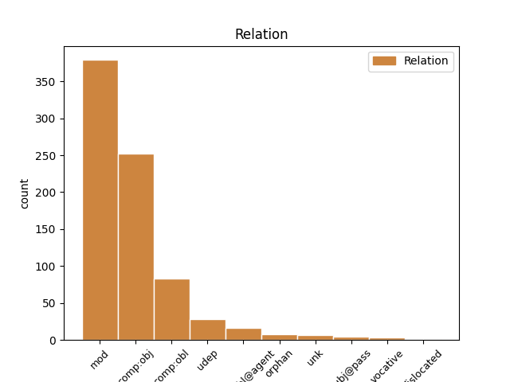
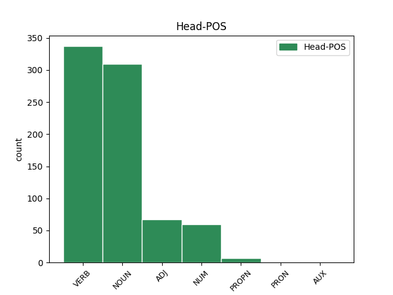
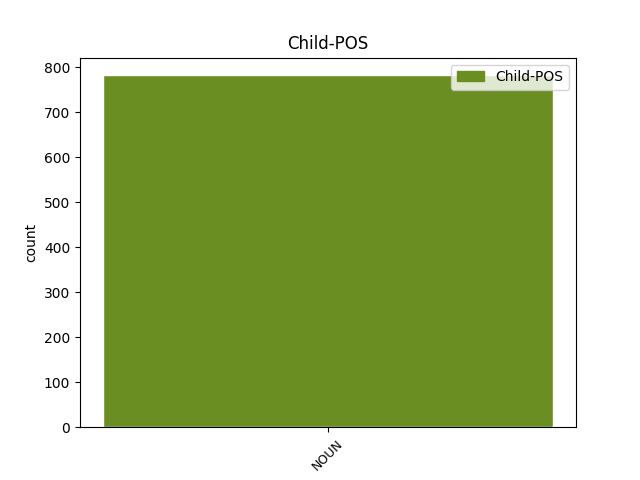

Distribution of features within this leaf



Agreement Rules sorted by frequency.
- When the dependent token is the modifer(mod) of the head token, and the head token is NOUN and the dependent token is NOUN.
1 о _ _ _ _ 0 _ _ _
2 сѫдѣ _ _ _ _ 0 _ _ _
3 же _ _ _ _ 0 _ _ _
4 ѣко _ _ _ _ 0 _ _ _
5 кънѧѕъ кънѧѕь NOUN Nb Case=Nom|Gender=Masc|Number=Sing 0 _ _ _
6 мира миръ NOUN Nb Case=Gen|Gender=Masc|Number=Sing 5 mod _ LId=2|ref=JOHN_16.11
7 сего _ _ _ _ 0 _ _ _
8 осѫжденъ _ _ _ _ 0 _ _ _
9 бꙑстъ _ _ _ _ 0 _ _ _
1 аште _ _ _ _ 0 _ _ _
2 дѣлъ _ _ _ _ 0 _ _ _
3 не _ _ _ _ 0 _ _ _
4 бимь _ _ _ _ 0 _ _ _
5 сътворилъ _ _ _ _ 0 _ _ _
6 въ _ _ _ _ 0 _ _ _
7 нихъ _ _ _ _ 0 _ _ _
8 ꙇхъже _ _ _ _ 0 _ _ _
9 инъ _ _ _ _ 0 _ _ _
10 никтоже _ _ _ _ 0 _ _ _
11 сътвори _ _ _ _ 0 _ _ _
12 грѣха грѣхъ NOUN Nb Case=Gen|Gender=Masc|Number=Sing 15 comp:obj _ ref=JOHN_15.24
13 не _ _ _ _ 0 _ _ _
14 бѫ _ _ _ _ 0 _ _ _
15 имѣли имѣти VERB V- Aspect=Res|Case=Nom|Gender=Masc|Number=Plur|Strength=Strong|VerbForm=Part|Voice=Act 0 _ _ _
1 нѣстъ _ _ _ _ 0 _ _ _
2 рабъ _ _ _ _ 0 _ _ _
3 болеи болии ADJ A- Case=Nom|Degree=Cmp|Gender=Masc|Number=Sing 0 _ _ _
4 г҃а господь NOUN Nb Case=Gen|Gender=Masc|Number=Sing 3 comp:obl _ ref=JOHN_15.20
5 своего _ _ _ _ 0 _ _ _
1 хлѣбъ _ _ _ _ 0 _ _ _
2 бо _ _ _ _ 0 _ _ _
3 б҃жии _ _ _ _ 0 _ _ _
4 естъ _ _ _ _ 0 _ _ _
5 съходѧи _ _ _ _ 0 _ _ _
6 съ _ _ _ _ 0 _ _ _
7 небесе _ _ _ _ 0 _ _ _
8 и _ _ _ _ 0 _ _ _
9 даѩи даꙗти VERB V- Case=Nom|Gender=Masc|Number=Sing|Strength=Weak|Tense=Pres|VerbForm=Part|Voice=Act 0 _ _ _
10 живота _ _ _ _ 0 _ _ _
11 мироу миръ NOUN Nb Case=Dat|Gender=Masc|Number=Sing 9 comp:obl _ LId=2|ref=JOHN_6.33
1 Сѫшти _ _ _ _ 0 _ _ _
2 же _ _ _ _ 0 _ _ _
3 поздѣ _ _ _ _ 0 _ _ _
4 вь _ _ _ _ 0 _ _ _
5 тъ _ _ _ _ 0 _ _ _
6 день _ _ _ _ 0 _ _ _
7 вь _ _ _ _ 0 _ _ _
8 единѫ ѥдинъ NUM Ma Case=Acc|Gender=Fem|Number=Sing 0 _ _ _
9 соботъ сѫбота NOUN Nb Case=Gen|Gender=Fem|Number=Plur 8 mod _ ref=JOHN_20.19
10 ꙇ _ _ _ _ 0 _ _ _
11 двьремъ _ _ _ _ 0 _ _ _
12 затвореномъ _ _ _ _ 0 _ _ _
13 ꙇдеже _ _ _ _ 0 _ _ _
14 бѣахѫ _ _ _ _ 0 _ _ _
15 оученици _ _ _ _ 0 _ _ _
16 его _ _ _ _ 0 _ _ _
17 събърани _ _ _ _ 0 _ _ _
18 за _ _ _ _ 0 _ _ _
19 страхъ _ _ _ _ 0 _ _ _
20 июдеискъ _ _ _ _ 0 _ _ _
21 приде _ _ _ _ 0 _ _ _
22 и҃съ _ _ _ _ 0 _ _ _
1 а _ _ _ _ 0 _ _ _
2 любѧи _ _ _ _ 0 _ _ _
3 мѧ _ _ _ _ 0 _ _ _
4 вьзлюбле҄нъ възлюбити VERB V- Case=Nom|Gender=Masc|Number=Sing|Strength=Strong|Tense=Past|VerbForm=Part|Voice=Pass 0 _ _ _
5 бѫдетъ _ _ _ _ 0 _ _ _
6 о҃тцмъ отьць NOUN Nb Case=Ins|Gender=Masc|Number=Sing 4 comp:obl@agent _ ref=JOHN_14.21
7 моимь _ _ _ _ 0 _ _ _
8 и _ _ _ _ 0 _ _ _
9 азъ _ _ _ _ 0 _ _ _
10 възлюблю _ _ _ _ 0 _ _ _
11 и _ _ _ _ 0 _ _ _
12 ꙇ _ _ _ _ 0 _ _ _
13 ѣвлѭ҄ _ _ _ _ 0 _ _ _
14 сѧ _ _ _ _ 0 _ _ _
15 емоу _ _ _ _ 0 _ _ _
16 самъ _ _ _ _ 0 _ _ _
1 ꙇ _ _ _ _ 0 _ _ _
2 възглашъ възгласити VERB V- Case=Nom|Gender=Masc|Number=Sing|Strength=Strong|Tense=Past|VerbForm=Part|Voice=Act 0 _ _ _
3 гласомь гласъ NOUN Nb Case=Ins|Gender=Masc|Number=Sing 2 udep _ ref=LUKE_23.46
4 велиемь _ _ _ _ 0 _ _ _
5 и҃съ _ _ _ _ 0 _ _ _
6 рече _ _ _ _ 0 _ _ _
1 отъ _ _ _ _ 0 _ _ _
2 селѣ _ _ _ _ 0 _ _ _
3 бѫдетъ _ _ _ _ 0 _ _ _
4 с҃нъ _ _ _ _ 0 _ _ _
5 ч҃лвчъскꙑи _ _ _ _ 0 _ _ _
6 сѣдѧ _ _ _ _ 0 _ _ _
7 о _ _ _ _ 0 _ _ _
8 деснѫѭ деснъ ADJ A- Case=Acc|Degree=Pos|Gender=Fem|Number=Sing|Strength=Weak 0 _ _ _
9 силꙑ сила NOUN Nb Case=Gen|Gender=Fem|Number=Sing 8 mod _ ref=LUKE_22.69
10 б҃жиѩ҅ _ _ _ _ 0 _ _ _
1 Въздрадовашѧ _ _ _ _ 0 _ _ _
2 же _ _ _ _ 0 _ _ _
3 сѧ _ _ _ _ 0 _ _ _
4 оученици _ _ _ _ 0 _ _ _
5 видѣвъше видѣти VERB V- Case=Nom|Gender=Masc|Number=Plur|Strength=Strong|Tense=Past|VerbForm=Part|Voice=Act 0 _ _ _
6 г҃а господь NOUN Nb Case=Gen|Gender=Masc|Number=Sing 5 unk _ ref=JOHN_20.20
1 бѫдетъ _ _ _ _ 0 _ _ _
2 бо _ _ _ _ 0 _ _ _
3 отъ _ _ _ _ 0 _ _ _
4 селѣ _ _ _ _ 0 _ _ _
5 пѧть _ _ _ _ 0 _ _ _
6 вь _ _ _ _ 0 _ _ _
7 единомъ _ _ _ _ 0 _ _ _
8 домоу _ _ _ _ 0 _ _ _
9 раздѣленъ _ _ _ _ 0 _ _ _
10 трие _ _ _ _ 0 _ _ _
11 на _ _ _ _ 0 _ _ _
12 дъва _ _ _ _ 0 _ _ _
13 и _ _ _ _ 0 _ _ _
14 дъва _ _ _ _ 0 _ _ _
15 на _ _ _ _ 0 _ _ _
16 три _ _ _ _ 0 _ _ _
17 ꙇ _ _ _ _ 0 _ _ _
18 раздѣлѧтъ _ _ _ _ 0 _ _ _
19 сѧ _ _ _ _ 0 _ _ _
20 отъцъ _ _ _ _ 0 _ _ _
21 на _ _ _ _ 0 _ _ _
22 с҃нъ _ _ _ _ 0 _ _ _
23 ꙇ҅ _ _ _ _ 0 _ _ _
24 с҃нъ _ _ _ _ 0 _ _ _
25 на _ _ _ _ 0 _ _ _
26 о҃тъца _ _ _ _ 0 _ _ _
27 мати _ _ _ _ 0 _ _ _
28 на _ _ _ _ 0 _ _ _
29 дъштерь _ _ _ _ 0 _ _ _
30 и _ _ _ _ 0 _ _ _
31 дъшти _ _ _ _ 0 _ _ _
32 на _ _ _ _ 0 _ _ _
33 матерь _ _ _ _ 0 _ _ _
34 свекрꙑ свекрꙑ NOUN Nb Case=Nom|Gender=Fem|Number=Sing 0 _ _ _
35 на _ _ _ _ 0 _ _ _
36 невѣстѫ _ _ _ _ 0 _ _ _
37 своѭ _ _ _ _ 0 _ _ _
38 и _ _ _ _ 0 _ _ _
39 невѣста невѣста NOUN Nb Case=Nom|Gender=Fem|Number=Sing 34 orphan _ ref=LUKE_12.53
40 на _ _ _ _ 0 _ _ _
41 свекровь _ _ _ _ 0 _ _ _
42 своѭ _ _ _ _ 0 _ _ _
1 Приде _ _ _ _ 0 _ _ _
2 и҃с _ _ _ _ 0 _ _ _
3 двьремь двьрь NOUN Nb Case=Dat|Gender=Fem|Number=Plur 4 subj@pass _ ref=JOHN_20.26
4 затворенамъ затворити VERB V- Case=Dat|Gender=Fem|Number=Plur|Strength=Strong|Tense=Past|VerbForm=Part|Voice=Pass 0 _ _ _
5 ꙇ _ _ _ _ 0 _ _ _
6 ста _ _ _ _ 0 _ _ _
7 по _ _ _ _ 0 _ _ _
8 срѣдѣ _ _ _ _ 0 _ _ _
9 и _ _ _ _ 0 _ _ _
10 рече _ _ _ _ 0 _ _ _
1 никꙑиже никꙑиже ADJ Px Case=Nom|Gender=Masc|Number=Sing 0 _ _ _
2 г҃и господь NOUN Nb Case=Voc|Gender=Masc|Number=Sing 1 vocative _ ref=JOHN_8.11
1 г҃лѭ _ _ _ _ 0 _ _ _
2 же _ _ _ _ 0 _ _ _
3 вамъ _ _ _ _ 0 _ _ _
4 ѣко _ _ _ _ 0 _ _ _
5 вьсѣко _ _ _ _ 0 _ _ _
6 слово слово NOUN Nb Case=Nom|Gender=Neut|Number=Sing 15 dislocated _ ref=MATT_12.36
7 праздъно _ _ _ _ 0 _ _ _
8 еже _ _ _ _ 0 _ _ _
9 аще _ _ _ _ 0 _ _ _
10 рекѫтъ _ _ _ _ 0 _ _ _
11 ч҃лвци _ _ _ _ 0 _ _ _
12 въздадѧтъ _ _ _ _ 0 _ _ _
13 о _ _ _ _ 0 _ _ _
14 немь _ _ _ _ 0 _ _ _
15 слово слово NOUN Nb Case=Acc|Gender=Neut|Number=Sing 0 _ _ _
16 вь _ _ _ _ 0 _ _ _
17 день _ _ _ _ 0 _ _ _
18 сѫдьнꙑ _ _ _ _ 0 _ _ _
1 Ꙇ҅ _ _ _ _ 0 _ _ _
2 аште _ _ _ _ 0 _ _ _
3 не _ _ _ _ 0 _ _ _
4 би _ _ _ _ 0 _ _ _
5 г҃ъ _ _ _ _ 0 _ _ _
6 прѣкратилъ _ _ _ _ 0 _ _ _
7 дьнии _ _ _ _ 0 _ _ _
8 не _ _ _ _ 0 _ _ _
9 би _ _ _ _ 0 _ _ _
10 бꙑла бꙑти AUX V- Aspect=Res|Case=Nom|Gender=Fem|Number=Sing|Strength=Strong|VerbForm=Part|Voice=Act 0 _ _ _
11 съпасена _ _ _ _ 0 _ _ _
12 вьсѣка _ _ _ _ 0 _ _ _
13 плъть плъть NOUN Nb Case=Nom|Gender=Fem|Number=Sing 10 subj@pass _ ref=MARK_13.20
1 Въ _ _ _ _ 0 _ _ _
2 шестꙑ _ _ _ _ 0 _ _ _
3 же _ _ _ _ 0 _ _ _
4 мѣсѧцъ _ _ _ _ 0 _ _ _
5 посъланъ _ _ _ _ 0 _ _ _
6 бꙑстъ _ _ _ _ 0 _ _ _
7 а҃нꙉлъ _ _ _ _ 0 _ _ _
8 гавьрилъ _ _ _ _ 0 _ _ _
9 отъ _ _ _ _ 0 _ _ _
10 б҃а _ _ _ _ 0 _ _ _
11 въ _ _ _ _ 0 _ _ _
12 градъ _ _ _ _ 0 _ _ _
13 галилеискъ _ _ _ _ 0 _ _ _
14 емоуже _ _ _ _ 0 _ _ _
15 имѧ _ _ _ _ 0 _ _ _
16 назаретъ _ _ _ _ 0 _ _ _
17 къ _ _ _ _ 0 _ _ _
18 дѣвѣ _ _ _ _ 0 _ _ _
19 обрѫченѣ _ _ _ _ 0 _ _ _
20 мѫжеви _ _ _ _ 0 _ _ _
21 емоуже _ _ _ _ 0 _ _ _
22 имѧ _ _ _ _ 0 _ _ _
23 иосифъ _ _ _ _ 0 _ _ _
24 отъ _ _ _ _ 0 _ _ _
25 домоу _ _ _ _ 0 _ _ _
26 д҃авдва _ _ _ _ 0 _ _ _
27 ꙇ _ _ _ _ 0 _ _ _
28 имѧ _ _ _ _ 0 _ _ _
29 дѣвѣ дѣва NOUN Nb Case=Dat|Gender=Fem|Number=Sing 30 comp:obl _ ref=LUKE_1.27
30 мариѣ мариꙗ PROPN Ne Case=Nom|Gender=Fem|Number=Sing 0 _ _ _
1 г҃и господь NOUN Nb Case=Voc|Gender=Masc|Number=Sing 3 vocative _ ref=LUKE_22.38
2 се _ _ _ _ 0 _ _ _
3 ножа ножь NOUN Nb Case=Nom|Gender=Masc|Number=Dual 0 _ _ _
4 съде _ _ _ _ 0 _ _ _
5 дъва _ _ _ _ 0 _ _ _
Disagree Examples:
1 Ꙇ _ _ _ _ 0 _ _ _
2 се _ _ _ _ 0 _ _ _
3 принѣсѧ _ _ _ _ 0 _ _ _
4 емоу _ _ _ _ 0 _ _ _
5 ослабленъ ослабити VERB V- Case=Acc|Gender=Masc|Number=Sing|Strength=Strong|Tense=Past|VerbForm=Part|Voice=Pass 0 _ _ _
6 жилами жила NOUN Nb Case=Ins|Gender=Fem|Number=Plur 5 udep _ ref=MATT_9.2
7 на _ _ _ _ 0 _ _ _
8 одрѣ _ _ _ _ 0 _ _ _
9 лежѧщъ _ _ _ _ 0 _ _ _
1 ꙇ _ _ _ _ 0 _ _ _
2 видѣвъ видѣти VERB V- Case=Nom|Gender=Masc|Number=Sing|Strength=Strong|Tense=Past|VerbForm=Part|Voice=Act 0 _ _ _
3 и҃съ _ _ _ _ 0 _ _ _
4 вѣрѫ вѣра NOUN Nb Case=Acc|Gender=Fem|Number=Sing 2 comp:obj _ ref=MATT_9.2
5 ихъ _ _ _ _ 0 _ _ _
6 рече _ _ _ _ 0 _ _ _
7 ослабленоуемоу _ _ _ _ 0 _ _ _
1 ꙇ _ _ _ _ 0 _ _ _
2 видѣвъ видѣти VERB V- Case=Nom|Gender=Masc|Number=Sing|Strength=Strong|Tense=Past|VerbForm=Part|Voice=Act 0 _ _ _
3 и҃съ _ _ _ _ 0 _ _ _
4 помꙑшлениѣ помꙑшлѥниѥ NOUN Nb Case=Acc|Gender=Neut|Number=Plur 2 comp:obj _ ref=MATT_9.4
5 ихъ _ _ _ _ 0 _ _ _
6 рече _ _ _ _ 0 _ _ _
1 видѣвъше _ _ _ _ 0 _ _ _
2 же _ _ _ _ 0 _ _ _
3 народи _ _ _ _ 0 _ _ _
4 чюдишѧ _ _ _ _ 0 _ _ _
5 сѧ _ _ _ _ 0 _ _ _
6 и _ _ _ _ 0 _ _ _
7 прославишѧ _ _ _ _ 0 _ _ _
8 б҃а _ _ _ _ 0 _ _ _
9 давъшааго дати VERB V- Case=Gen|Gender=Masc,Neut|Number=Sing|Strength=Weak|Tense=Past|VerbForm=Part|Voice=Act 0 _ _ _
10 власть власть NOUN Nb Case=Acc|Gender=Fem|Number=Sing 9 comp:obj _ ref=MATT_9.8
11 такѫ _ _ _ _ 0 _ _ _
12 ч҃лвкомъ _ _ _ _ 0 _ _ _
1 видѣвъше _ _ _ _ 0 _ _ _
2 же _ _ _ _ 0 _ _ _
3 народи _ _ _ _ 0 _ _ _
4 чюдишѧ _ _ _ _ 0 _ _ _
5 сѧ _ _ _ _ 0 _ _ _
6 и _ _ _ _ 0 _ _ _
7 прославишѧ _ _ _ _ 0 _ _ _
8 б҃а _ _ _ _ 0 _ _ _
9 давъшааго дати VERB V- Case=Gen|Gender=Masc,Neut|Number=Sing|Strength=Weak|Tense=Past|VerbForm=Part|Voice=Act 0 _ _ _
10 власть _ _ _ _ 0 _ _ _
11 такѫ _ _ _ _ 0 _ _ _
12 ч҃лвкомъ чловѣкъ NOUN Nb Case=Dat|Gender=Masc|Number=Plur 9 comp:obl _ ref=MATT_9.8